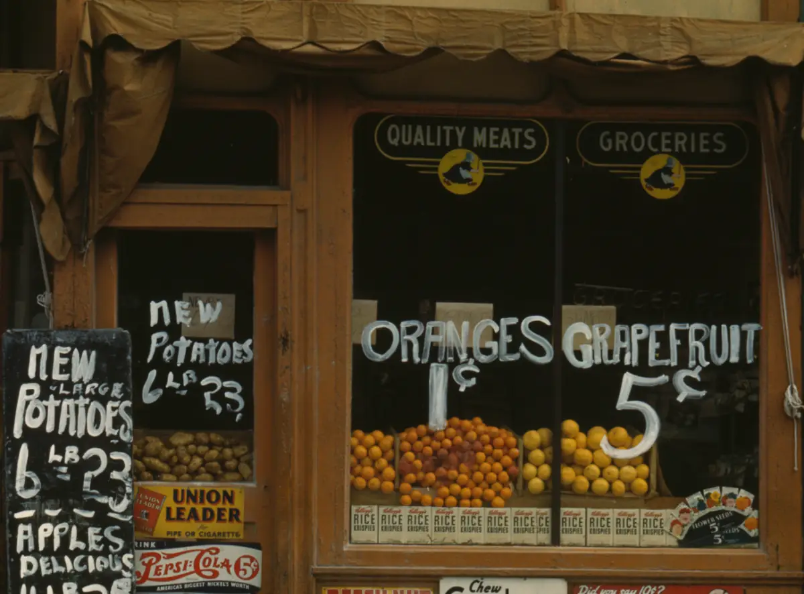
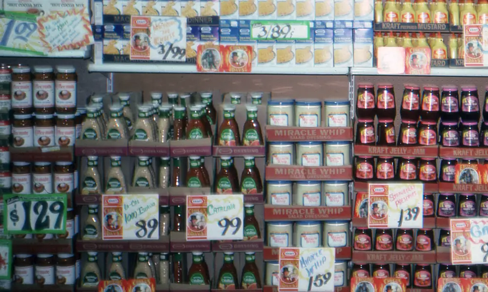
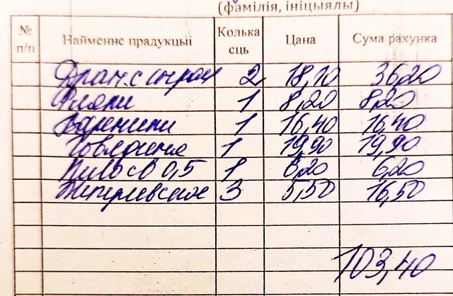

Financial reasoning practice
Learn to reason from a chart before risking a cent.
VeltaCapital pairs a written beginner curriculum with historical-chart exercises. Record the evidence behind your interpretation, reveal the actual candles, and review what the data showed without placing a trade.
No account needed to try. No trading, no profit promises, no real money at risk.

Try it now
Three rounds. No sign-up to play.
Place five estimates on the visible chart, reveal the historical candles, then review the result and plain-language explanation. The full course adds structured reasoning and portfolio tracking.
How it works
Learn, interpret, reflect.
Learn the concept
Written lessons cover market structure, chart mechanics, risk, uncertainty, and the limitations of technical signals.
Record your interpretation
Estimate a future path and record the structure, evidence, and confidence behind your view before seeing the outcome.
Reflect on the result
Compare path accuracy separately from direction and review descriptive observations without claiming that a chart caused the move.
Every number on a chart started somewhere ordinary.
A business is shelves, freight, machines, and bills long before it is a line on a screen. Keep these in mind when a chart starts to feel abstract.

PRICE
RECORDCourse preview
The Field Guide.
Nine illustrated guides drawn from the 15-chapter course. Pick a cover and its workspace opens below.
OHLCV & candles
Read what a candle records without inventing a cause.
The full course has 15 chapters; these nine guides group its chart, risk, and reasoning ideas. Read the scoring and data methodology →
Open learning lab
The Evidence Desk.
Three statements, three exhibits. Inspect what is on the page, then decide what the data can actually support.
Reasoning practiced
- 01Compare recorded values before you describe them.
- 02Separate what was recorded from why it happened.
- 03Treat a past pattern as a record, not a promise.
Everything is included.
No payment method is requested or stored. VeltaCapital is an educational project and does not claim nonprofit or tax-exempt legal status.
Who wrote this notebook
The people behind the desk.
Saechan Jung
Designs the written lessons and historical-chart exercises from a student educator's perspective. His background includes school finance leadership and educational market simulations; it is not professional investment-advisory experience.
Samuel Ha
Builds the platform, historical-data exercises, authentication, and accessibility features. Focused on making financial concepts easier to examine and question.
Reader notes
Notes from readers.
Written by people who have used VeltaCapital. Our team reads each note before it appears here. These are personal opinions about learning, not investment advice or a promise of results.
Get in touch